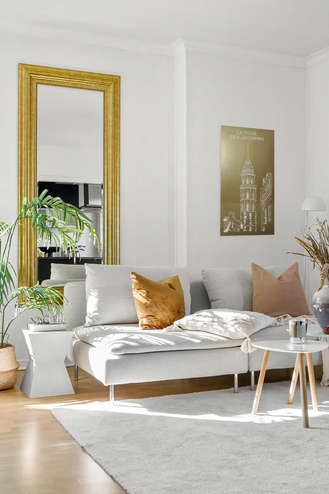
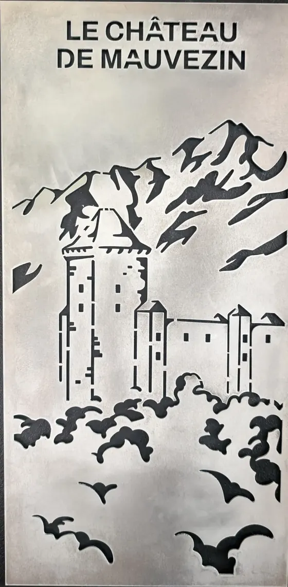
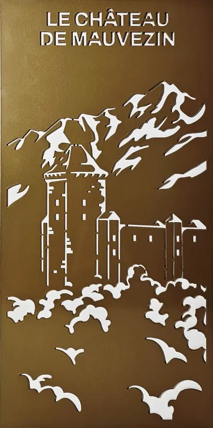
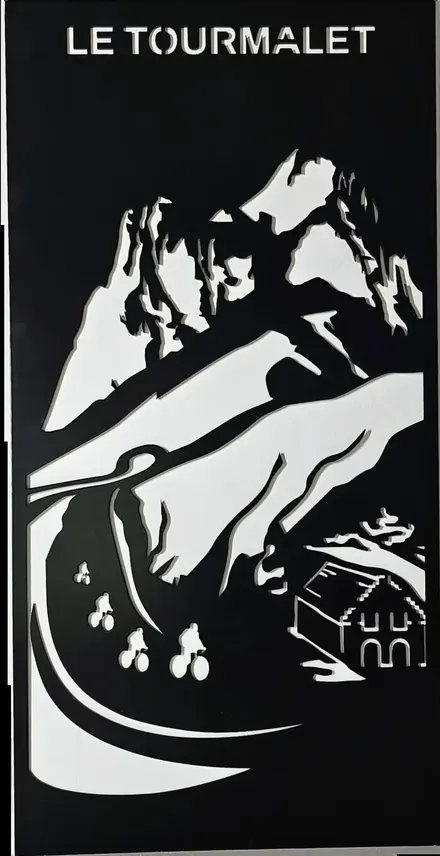
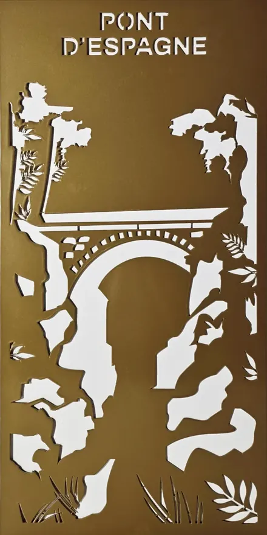
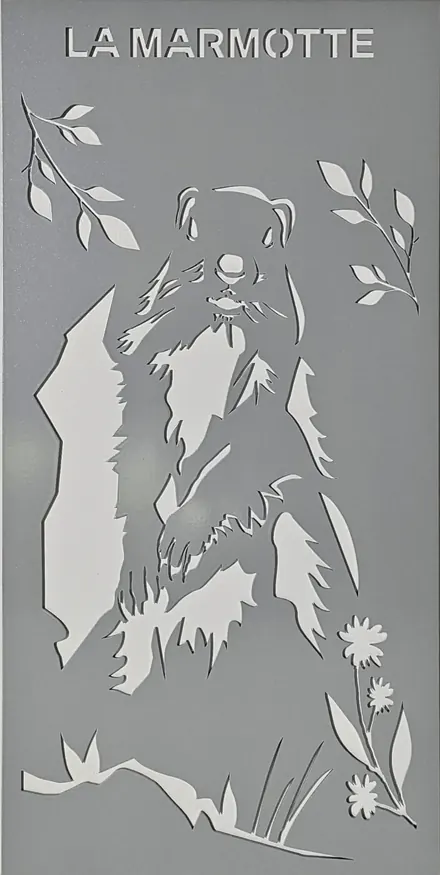

À propos
Une histoire gravée dans le métal
Terre Gravée est née d’une passion pour le patrimoine, la nature et le design. Nous créons des plaques décoratives en métal découpé au laser, inspirées des paysages, de la faune et de l’histoire de nos régions.

Raconter un lieu
Chaque création raconte l’histoire d’un lieu, d’un symbole ou d’une émotion ancrée dans nos terres. Le Pic du Midi, la tour des Jacobins, l’isard : des repères que l’on reconnaît au premier coup d’œil.
Nous croyons en une production à taille humaine, en séries limitées, dans le respect des matériaux, des savoir-faire et de notre territoire. Chaque plaque est pensée pour durer.
- 150 kmToutes nos plaques sont fabriquées dans ce rayon, du dessin à l’expédition.
- N° 001Série limitée : chaque plaque porte son numéro gravé au dos.
- 0 perçageDeux fixations adhésives 3M Command™ fournies avec la plaque.
- 2 à 4 joursDélai de livraison indicatif, en jours ouvrés.
Fabrication locale
Quatre étapes, un seul territoire
Notre volonté : mettre en lumière les savoir-faire du Sud-Ouest. Toutes nos plaques sont réalisées dans un rayon de 150 km.
Dessin
IllustratricesLes visuels originaux sont dessinés par Maude Villatte et Lola Jacquet.
Découpe laser
Revel (31)Le laser découpe l’aluminium avec une grande finesse de détail.
Thermolaquage
Bagnères-de-Bigorre (65)Une finition mate ou satinée, résistante en intérieur comme en extérieur.
Assemblage et expédition
Bagnères-de-Bigorre (65)Contrôle qualité, emballage renforcé et envoi.


Série limitée
Un numéro au dos de chaque plaque
Chaque modèle est édité en quantité limitée. Le numéro gravé au dos fait de chaque plaque une pièce de collection.


